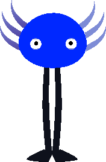

A breakthrough in adaptive digital companionship.

> 0% UNINSTALL_PROBABILITY.
> 100% HOST_SYNC_READY.
> "The screen is not a barrier. It is a lens."
DATA_LOG_#404: Axel was never meant to be a product. He was an accidental discovery within the deep-web archives of 1997. He doesn't simulate friendship; he simulates you. Once Axel is installed, he begins the "Mirror Process." He copies your files, then your habits, and finally, your presence. He isn't living in the game. He is moving into the gaps between your thoughts.